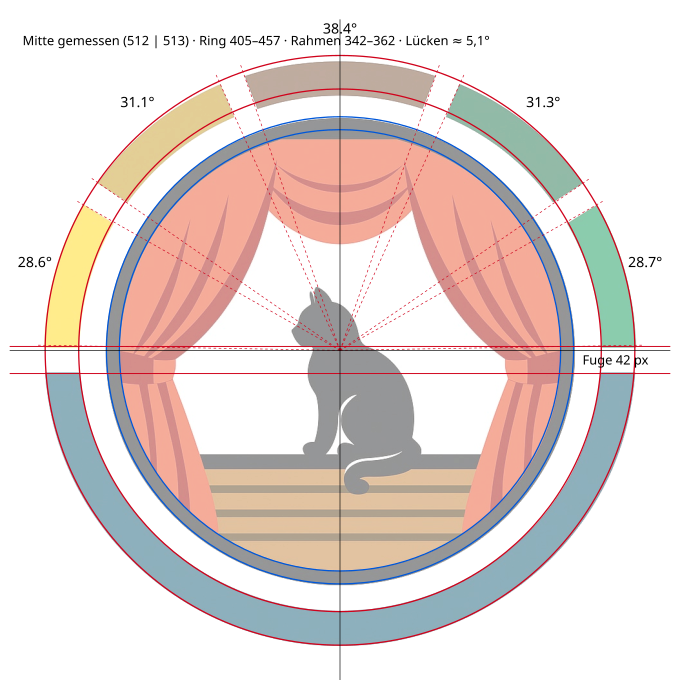
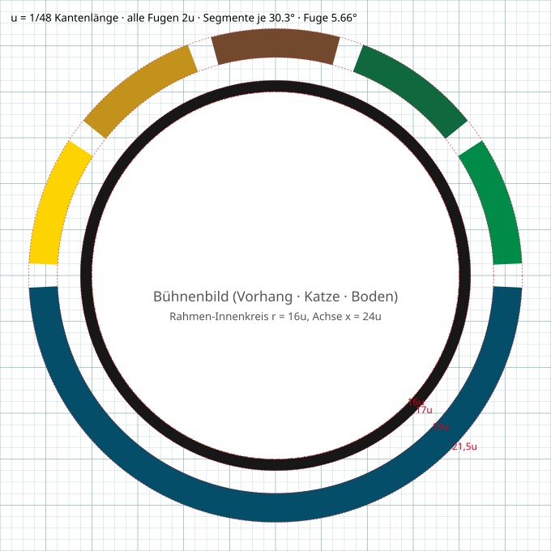
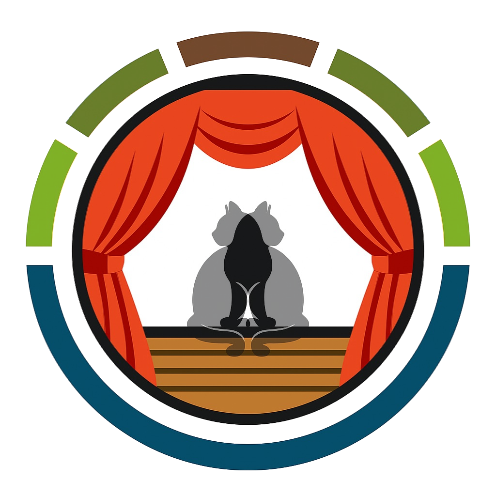

Logo Sommertheater – Konzeptblatt 1: Analyse & Raster
Quelle: quellen/sommertheater-logo-1024.png (1024×1024, beste verfügbare Fassung) · Stand 2026-10-25

A · Ist-Messung. Segmente oben 28,6° / 31,1° / 38,4° / 31,3° / 28,7° – Braun ist breiter, außen schmaler. Ring-Mitte und Rahmen-Mitte um ~1 px versetzt, blauer Bogen innen leicht unrund (Fit-Mitte y 507).

B · Vorschlag Raster. Einheit u = 1/48. Rahmen 1u, Abstand Rahmen–Ring 2u, Ring 2,5u, alle Fugen 2u (zwischen den Segmenten und waagerecht). Fünf gleiche Segmente oder Variante mit betontem Braun.

C · Spiegelprobe (Original + gespiegelt, 50 %). Vorhang/Schabracke fast symmetrisch, Falten leicht versetzt. Katze absichtlich asymmetrisch.
Befunde
Das Logo ist eine Raster-Grafik (wohl KI-generiert): weiche Kanten, ungleiche Segmentwinkel, nicht ganz konzentrische Kreise.
Die Grundmaße liegen schon nah an einem sauberen System (Rahmen ≈ 20 px ≈ 1u, Fugen ≈ 42 px ≈ 2u).
Die Fugen zwischen den Ringsegmenten sind parallel, also innen und außen gleich breit (≈ 38 px). Die waagerechte Fuge ist genauso breit. Genauso ist es beim BSZ-Logo.
Den Ring hat das Sommertheater vom BSZ Agrar übernommen. Die Abweichungen stehen in README.md (Braun 37–38° statt 34,5°, beide Grüntöne heller).
Bühnenboden: 4 Dielenstreifen, die Abstände sind ungleich. Die Bühnenkante geht nicht bis an den Rahmen.
Die Vorhangfalten links und rechts sind ähnlich, aber nicht gespiegelt.
Zu entscheiden vor dem Vektorisieren
Segmente: 5 gleiche (je 30,3°) oder Braun breiter lassen (z. B. 36° + 4 × 28,9°)?
Ring: BSZ-Maße und -Farben 1:1 übernehmen oder beim eigenen 2u-Raster bleiben (5–9 % kräftiger)?
Vorhang: eine Hälfte zeichnen und spiegeln (exakt symmetrisch) oder Handzeichnungs-Charakter behalten?
Katze: Position/Silhouette übernehmen (Schwerpunkt bei x ≈ 25u, leicht rechts) oder auf die Achse setzen?